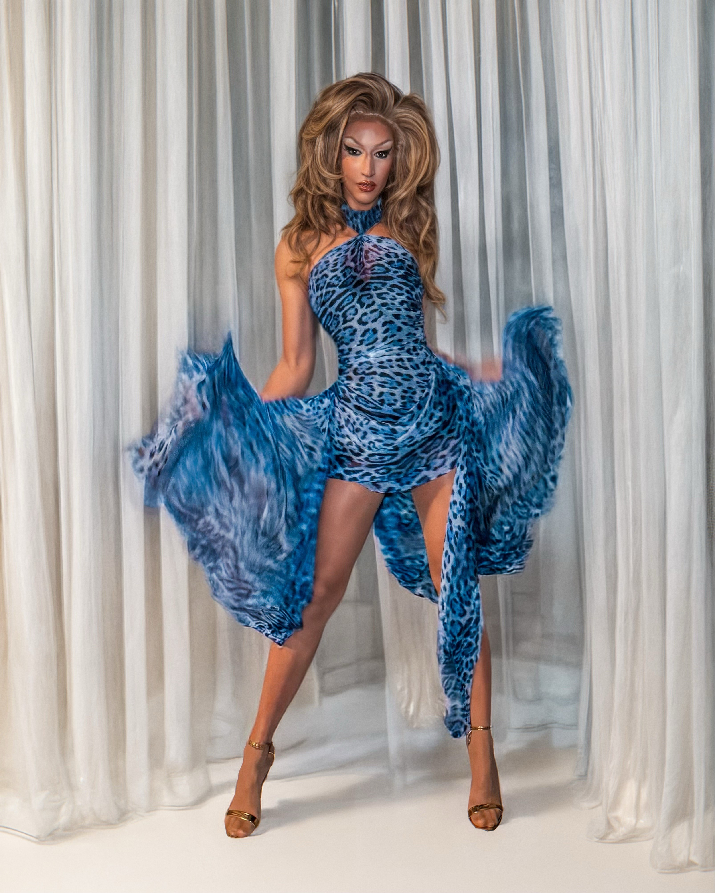
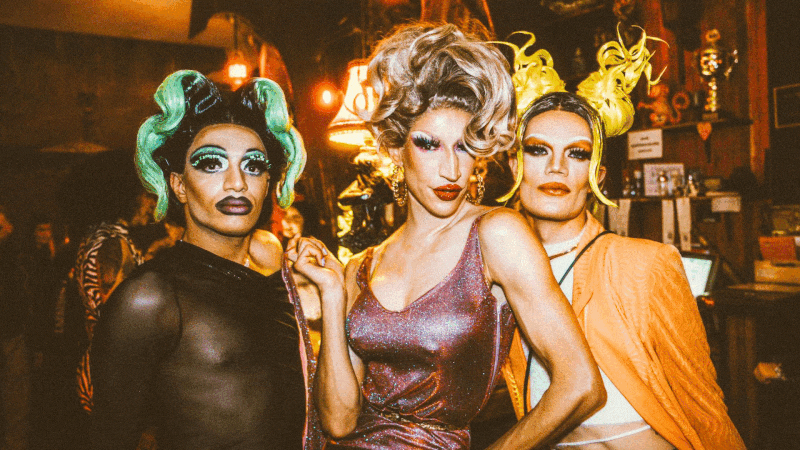
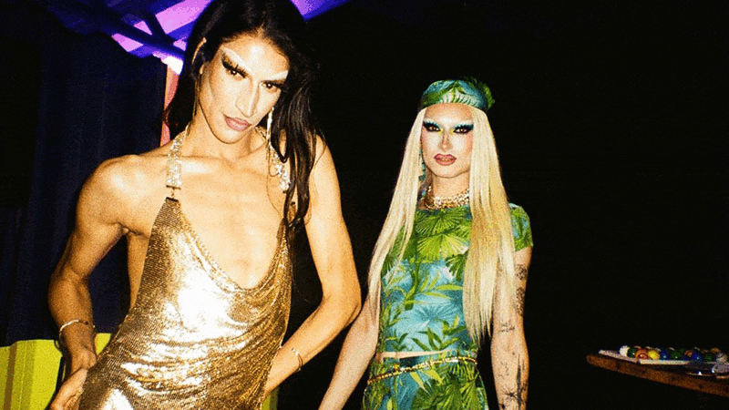

Ich bin Karlie Kant, Dragqueen aus Berlin, established 2017 – immer gut gekleidet, immer gut gelaunt!
Saarbrücken – mein queerer Heimathafen (und ich bin die AIDA)...
Ob Märchenwald, Toxic Masculinity, Saints & Sinners oder True Crime – kein Thema ist zu groß für diesen Drag-Fiebertraum.
